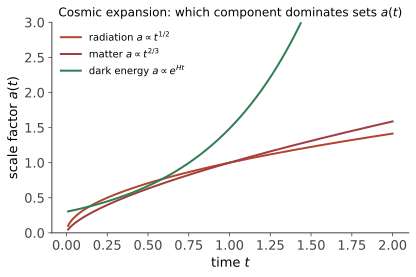

本页目录
宇宙学 I · FRW 与 Friedmann 方程
对标：Ryden §4–6 ｜ 前置：gr-03（FRW 度规）、sm 线 把整个宇宙当一个物理系统：均匀各向同性 + Einstein 方程 = 一个标度因子 \(a(t)\) 的 ODE。本页推 Friedmann 方程、建"宇宙学的会计制度"（各组分如何稀释）、给出 ΛCDM 的账本——宇宙 95% 由未知项构成的现代处境。
学习层：三种“视界”到底是哪一种边界？
1. 先做一个因果预测
想象今天在某个共动星系发出一束光。下面三个问题看起来都像“它离我们多远”，但答案不是同一个量：
- Hubble sphere：此刻满足 \(H D=c\) 的距离是多少？它是不是光子绝对过不来的边界？
- 粒子视界：从模型起点到现在，过去发出的光最多已经让我们联系到多远？
- 事件视界：从现在往未来发出的光，最远最终还能联系到多远？
先在脑中写下你的判断，再打开下方实验。尤其预测：若没有 \(\Lambda\)，把未来积分真的做到 \(a'=\infty\) 会发生什么；若是纯 de Sitter，过去的粒子积分又是否收敛？
2. 透明的平坦 FRW toy model
固定今天 \(a_0=1\)，取空间平坦、只保留辐射、物质和宇宙学常数：
实验中所有距离都除以 \(c/H_0\)；因此以下数字是无量纲的。物理距离 = \((c/H_0)\) 乘无量纲距离：
这里 \(D_H\) 是瞬时的 Hubble sphere，\(D_p\) 是物理的粒子视界，\(D_e\) 是物理的事件视界。后两者是光锥累计量，而不是把 \(H\) 在某个时刻倒过来就得到的同一个半径。
为了让积分账本可以逐项复核，令
第一式只是把 \(1/(a'^2E(a'))\) 展开；第二式用 \(u=1/a'\) 把精确的未来无穷端点 \(a'=\infty\) 变成 \(u=0\)。所以
实验不会把 \(a'=\infty\) 偷换成某个有限上限：若 \(I_e\) 发散，读数明确写“发散 / 不存在”。
3. 四个教学预设：先看解析极限
| 预设 | \(E(a)\) | \(D_H/(c/H_0)\) | \(D_p/(c/H_0)\) | \(D_e/(c/H_0)\) | 读法 |
|---|---|---|---|---|---|
| 纯辐射 | \(a^{-2}\) | \(a^2\) | \(a^2\) | 发散 / 不存在 | 过去积分收敛，未来没有加速尾巴把光隔开 |
| 纯物质 | \(a^{-3/2}\) | \(a^{3/2}\) | \(2a^{3/2}\) | 发散 / 不存在 | \(a=1\) 时粒子视界是 \(2c/H_0\)，但事件视界不存在 |
| 纯 de Sitter | \(1\) | \(1\) | 发散 / 不存在 | \(1\) | 平坦切片向过去无限延伸；未来事件视界有限 |
| ΛCDM toy | \(\sqrt{\Omega_r a^{-4}+\Omega_m a^{-3}+\Omega_\Lambda}\) | 数值 | 数值 | 数值 | 三项都在账本中；不是最新精密拟合 |
两条最容易漏写的边界是：
- \(a\to0\)：辐射主导时 \(D_H,D_p\sim a^2\)；物质主导时 \(D_H\sim a^{3/2}\)、\(D_p\sim2a^{3/2}\)。若模型还含早期辐射或物质且未来积分收敛，则 \(D_e\sim a\lim_{a\to0}I_e(a)\to0\)。纯 de Sitter 是例外：\(I_p\) 从 \(0\) 端发散，而 \(D_e=(c/H_0)/\sqrt{\Omega_\Lambda}\) 在所有 \(a\) 上保持常数。
- \(a'\to\infty\)：只要 \(\Omega_\Lambda=0\)，\(I_e\) 发散，事件视界就不存在；不能用“积分到 \(a'=10^3\)”之类的有限数冒充它。只要 \(\Omega_\Lambda>0\)，未来渐近 \(H\to H_0\sqrt{\Omega_\Lambda}\)，事件积分收敛，并且 \(D_e\to(c/H_0)/\sqrt{\Omega_\Lambda}\)（当 \(a\to\infty\)）。
4. 动手实验：看图、读账本、再预测
先点击“物质主导”和“de Sitter”，把 \(a\) 留在 \(1\)，用上表手算，再切换到“辐射主导”和“ΛCDM toy”。观察同一张因果 / 距离图如何把有限曲线与“∞（发散）”分开；下方积分账本逐行显示 \(E(a)\)、\(I_p\)、\(I_e\) 和三个距离。
无 JavaScript 时的静态 fallback（单位均为 \(c/H_0\)）：
手算采用 \(a=1\)。
| 预设 | \(E(1)\) | Hubble sphere \(D_H\) | 粒子视界 \(D_p\) | 事件视界 \(D_e\) |
|---|---|---|---|---|
| 物质主导：\(\Omega_m=1\) | \(1\) | \(1\) | \(\displaystyle\int_0^1 \frac{da'}{\sqrt{a'}}=2\) | \(\displaystyle\int_1^\infty \frac{da'}{\sqrt{a'}}=\infty\)，不存在 |
| de Sitter：\(\Omega_\Lambda=1\) | \(1\) | \(1\) | \(\displaystyle\int_0^1 \frac{da'}{a'^2}=\infty\)，不存在有限粒子视界 | \(\displaystyle\int_1^\infty \frac{da'}{a'^2}=1\) |
这两个手算例子同时提醒：Hubble sphere、粒子视界和事件视界可以相等、不同，或其中一个根本没有有限值；“视界”不能只看一个名字。
5. 三个概念的因果边界
- Hubble sphere 通常不是因果边界。 在某一时刻，共动星系的退行速度写成 \(v_{\rm rec}=H D\)；\(D>c/H\) 只表示这个整体膨胀坐标下的退行速度超过 \(c\)。它不是局域惯性系里两个相邻物体的相对速度，因此不违反局域狭义相对论；局部光速仍为 \(c\)。光子能否穿过某个 \(D_H\)，要沿整个 FRW 光锥积分判断。
- 粒子视界回答“过去能否联系”。 \(D_p\) 是过去光锥从模型起点累计出的最大物理距离：它回答“从过去发来的信号，原则上已经有机会到达我们吗？”它不回答未来发信。
- 事件视界回答“未来能否联系”。 \(D_e\) 把从现在到 \(a'=\infty\) 的未来都计入：它回答“现在发出的信号，未来是否仍有机会到达目标观察者？”没有加速晚期时，未来积分发散，答案是不存在有限事件视界。
“超光速退行”与“不可联系”不是同一句话：前者是瞬时、整体膨胀的 \(HD\) 读数；后者是光锥积分的收敛性与边界条件。
6. 模型边界与迁移题
这是一个透明的教学 toy：平坦、只含三种成分、\(w_\Lambda=-1\)，没有曲率、早期热历史细节、扰动、引力透镜或精密观测参数拟合。ΛCDM 预设的数字只为比较积分结构，不应读成当前最佳宇宙学参数。
迁移题：
- 不看实验，证明纯物质在任意 \(a>0\) 都有 \(D_p=2D_H\)，但 \(D_e\) 发散。这个比值是否意味着 Hubble sphere 是因果边界？
- 纯 de Sitter 的 \(D_p\) 为什么发散而 \(D_e\) 有限？分别指出两个积分的发散端点。
- 若给定某个新 \(E(a)\)，先检查 \(a\to0\) 和 \(a\to\infty\) 的幂次，再决定粒子/事件积分是否收敛；不要先画图再凭有限坐标轴猜“视界”。
1. Friedmann 方程
FRW 度规（gr-03）+ 理想流体 \(T_{\mu\nu}\) 代入场方程【骨架，一个牛顿式替代推导给直觉】：
牛顿直觉版：均匀球中取试验壳，能量守恒 \(\frac12\dot r^2 - \frac{GM(r)}{r} = E\) 除以 \(r^2\) 即第一式（\(k \propto -E\)：空间曲率 = 总能量符号——束缚/临界/逃逸的宇宙版）。\(\blacksquare\) 加速方程的读法：\(\rho + \frac{3p}{c^2}\) 是引力的真实源——压强也产生引力（广相特色）；负压足够（\(p < -\frac{\rho c^2}{3}\)）则 \(\ddot a > 0\)——加速膨胀的许可条款（§3 暗能量的席位）。
Hubble 定律：\(v = H_0d\)（\(H \equiv \frac{\dot a}{a}\)）——不是天体在飞而是空间在长（gr-03 红移的本地化表述）；\(H_0 \approx 70\) km/s/Mpc ⇒ Hubble 时间 \(\frac{1}{H_0} \approx 14\) Gyr（年龄的量级锚）。
2. 宇宙的会计制度：组分与稀释律

连续性方程（\(T\) 守恒）：\(\dot\rho = -3H(\rho + \frac{p}{c^2})\)——配状态方程 \(p = w\rho c^2\) 积分【推导一行】：\(\rho \propto a^{-3(1+w)}\)：
| 组分 | \(w\) | 稀释律 | 主导期的 \(a(t)\) |
|---|---|---|---|
| 物质（尘埃） | 0 | \(a^{-3}\)（数密度稀释） | \(a \propto t^{2/3}\) |
| 辐射 | 1/3 | \(a^{-4}\)（多一份红移） | \(a \propto t^{1/2}\) |
| 宇宙学常数 Λ | \(-1\) | 常数（空间自带） | \(a \propto e^{Ht}\)（de Sitter） |
【推导】 \(a(t)\) 幂律：单组分 Friedmann \(\dot a \propto a^{-\frac{1+3w}{2}}\) 分离变量。\(\blacksquare\) 接力剧本：辐射主导（早期，\(a^{-4}\) 衰减最快）→ 物质主导（结构形成期）→ Λ 主导（近 50 亿年——当下）：宇宙史 = 三种稀释律的接力赛，每次交接改变 \(a(t)\) 的形状。
3. ΛCDM 账本（观测宇宙学的现状）
密度参数 \(\Omega_i = \frac{\rho_i}{\rho_c}\)（\(\rho_c = \frac{3H_0^2}{8\pi G} \approx\) 每立方米 6 个氢原子——宇宙平坦的临界密度）。现代账本（Planck 卫星级【引用】）：
三行注脚：暗物质——星系旋转曲线平坦、引力透镜（gr-02）、CMB 声学峰三路证据合指"有引力不发光的组分"（粒子身份未知——pp 线的头号悬案之一）；暗能量——1998 超新星测距发现加速膨胀（诺奖 2011），与 Λ（\(w = -1\)）一致（"是否恰为常数"是当前观测焦点【引用 DESI 类】）；平坦性 \(\Omega_k \approx 0\)——CMB 声学标尺量出的空间几何（cosmo-02）。"95% 未知"不是失败而是坐标：定量宇宙学把无知精确到了小数点。
年龄积分：\(t_0 = \int_0^1\frac{da}{aH(a)} \approx 13.8\) Gyr（ΛCDM 参数代入数值积分——与最老球状星团自洽 ✓：曾经的"年龄危机"被 Λ 化解【引用】）。
4. 练习与要点
例 1（稀释律推导练手） 辐射为何 \(a^{-4}\)：数密度 \(a^{-3}\) × 每光子能量红移 \(a^{-1}\)——两行；由此定"物质-辐射平权"时刻 \(1 + z_{eq} = \frac{\Omega_m}{\Omega_r} \approx 3400\)（cosmo-02 热历史的第一块路标）。
例 2（de Sitter 未来） Λ 主导后 \(a \propto e^{Ht}\)：星系将逐个越出视界——远期宇宙学家将看到空荡的天（"观测窗口在关闭"的物理实感）；反推：我们恰在"账本还可读"的时代做宇宙学。
例 3（Friedmann 量纲核算） 用 \(H_0 = 70\) km/s/Mpc 算 \(\rho_c\)：\(\approx 9\times10^{-27}\ \mathrm{kg/m^3}\)——银河系内密度高它百万倍："宇宙平均"与"我们附近"差得远，均匀性只在 >100 Mpc 尺度成立（宇宙学原理的适用边界）。\(\blacksquare\)
下一页：倒带回热汤——大爆炸热历史：核合成、复合与 CMB——一张 2.725 K 的完美黑体照片如何成为宇宙学的罗塞塔石碑。